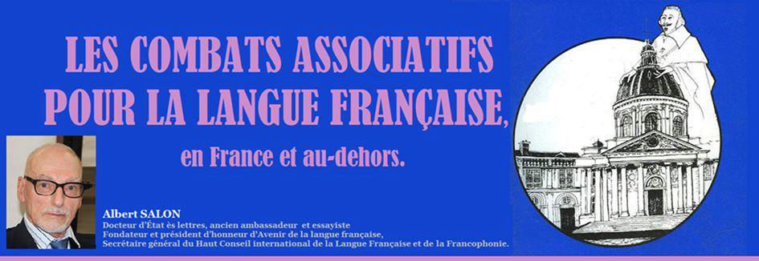
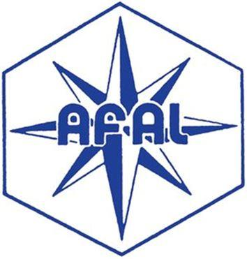
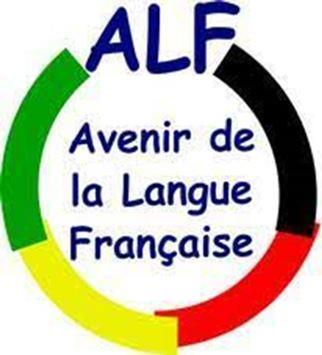
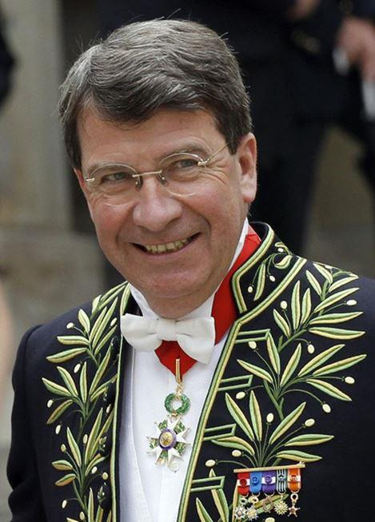
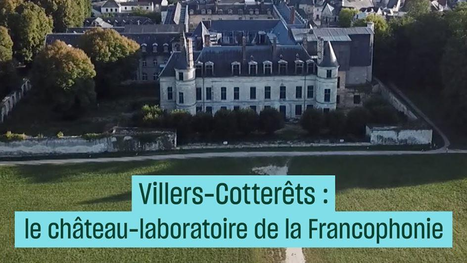

Les combats associatifs pour la langue française, en France et au-dehors
par Albert SALON

I) L’HISTOIRE DES LUTTES ASSOCIATIVES POUR LE FRANÇAIS CONTRIBUTION À SON ÉCRITURE SUGGÉRÉE AU COMITÉ D’HISTOIRE DU MINISTÈRE DE LA CULTURE, POUR RÉTABLIR LE RÔLE MÉCONNU, VOIRE OCCULTÉ*, DES ASSOCIATIONS.
Le rôle des associations pour le français et la Francophonie est resté longtemps méconnu, voire occulté, y compris dans les rapports au gouvernement, et jusque dans un colloque très officiel, présenté en journée d’études quasi universitaires, le 13 octobre 2014 au Sénat, sur le « Bilan des 20 années d’application de la « loi Toubon » 94-665 du 4 août 1994.
Législateurs et fonctionnaires des instituions publiques tendent, surtout en France, à présenter leur seule action au public, en taisant les apports de la société civile. Or, pour l’historien(ne), il est indispensable pour la manifestation de la vérité – de nombreuses archives en faisant foi – de tenir compte de l’action associative propre, liée ou non à celle des acteurs publics.
Tel est le sens, dans les domaines régaliens du français et de la Francophonie, de la présente contribution qu’un collectif d’associations françaises a jugé nécessaire d’apporter.
Une constatation s’impose d’abord : en cette matière, véritable cas d’école, l’action associative a précédé l’action du législateur, et a le plus souvent inspiré*, complété, voire dépassé à l’occasion, dans l’application des textes, celle des organismes officiels.
Après les congrégations religieuses chrétiennes, à l’action primordiale et fondatrice, naquirent au 19ème siècle de grandes associations porteuses de l’action culturelle extérieure : Alliance Israélite Universelle (1860 à Paris), Alliance française (1883), et en 1902 la Mission laïque française ; dans l’entre-deux guerres : l’Union internationale des Journalistes et de la Presse de langue française (UIJPLF), devenue aujourd’hui l’Union de la Presse francophone (UPF). En 1958, naquit Défense de la Langue française pour traiter de la situation du français en France. Des associations de défense du français étaient nées aussi en Belgique, au Canada, en Suisse. Parallèlement, dans le sillage des « Sociétés de géographie », d’abord anglaises, du mouvement d’expansion européenne au 19ème siècle, du puissant Flottenverein allemand de Guillaume II (« Notre avenir est sur l’eau !»), puis de sa plus modeste imitation française, la Ligue maritime et coloniale, devenue bien plus tard l’Association pour le « Rayonnement français », des associations se sont créées pour traiter des liens avec les autres pays de langue française, coloniaux et autres, après la découverte en 1880 par le journaliste Onésime Reclus du mot et de la réalité de la « francophonie ».
Mais les années 1960, dans la décennie de la « Révolution tranquille » au Québec et des indépendances africaines, virent l’éclosion et le foisonnement en France et dans les pays francophones, d’associations de toutes sortes, dans tous domaines, pour développer ces liens entre les pays ayant le français en partage, non plus dans l’esprit de la projection culturelle et linguistique française sur l’extérieur, mais dans celui de l’échange, du partage, de la coopération équilibrée, avec le développement et la déclinaison en variantes multiples de l’égalité de dignité des cultures, et du fameux « dialogue des cultures ». Ce bouillonnement d’idées généreuses a donné le ton et permis la création de ce qui est devenu la panoplie des institutions de la Francophonie.
Le mouvement associatif a fait naître, a tiré, les institutions publiques françaises et internationales, et les a dotées de son patrimoine intellectuel, avant qu’il ne se dégrade parfois en « langue de bois inter-étatique ». L’Association francophone d’Amitié et de Liaison (AFAL), fut créée sous l’impulsion du député Xavier Deniau (Loiret), sorte de réincarnation du député Eugène Étienne du temps des « Géographes », pour offrir une structure de coordination à ces associations fort diverses, avec une revue « Liaisons ».
L’AFAL connut alors un beau développement. Elle existe toujours.
Il faut rendre justice ici à Philippe Rossillon** pour les textes :
- de 1966 créant le Haut-Comité de la Langue française, ancêtre de l’actuelle DGLFLF ; il en fut tout naturellement le premier Secrétaire général ;
- de 1972 instituant les commissions de terminologie ;
- de 1975 : la « loi Bas-Lauriol » sur la langue française.
Ces textes fondateurs n'eussent pas existé s’il n'en eût rédigé les projets, puis encouragé, éperonné, les parlementaires et hauts fonctionnaires porteurs.
La Francophonie institutionnelle** doit largement à Philippe Rossillon et à l'éminent Québécois Jean-Marc Léger, épaulés par Bernard Dorin, Hyacinthe de Montera, Xavier. Deniau, Martial de la Fournière, Daniel Jurgensen, des amis africains et autres, le traité du 20 mars 1970 créant l’Agence de Coopération culturelle et technique (ACCT), ancêtre de l’actuelle OIF, trop souvent présentée comme tombée du ciel...
En avril-mai 1992, Philippe Rossillon et les créateurs (Dominique Gallet, Dominique Noguez et Albert Salon) d’Avenir de la langue française (ALF), ont été à l'origine des actions parlementaires (de MM. Deniau, Bellon, Legendre, Schumann, Toubon, et quelques autres) pour faire introduire dans l'article 2 de notre Constitution la très précieuse phrase :
« La langue de la République est le français ».
Et ce fut ALF, avec l'appui vigoureux de Rossillon**, qui, dès 1992, rédigea ce qui fut l’esquisse de la loi n° 665 du 4/8/1994, la présenta à Mme Tasca, travailla avec ses conseillers A. Ladousse, et aussi J. Simon, puis, après le changement de gouvernement de 1993, présenta l’esquisse à M. Toubon et travailla avec ses conseillers MM. P. Gény, Y. Marek, M. Portiche.
Ces deux ministres, lors du colloque 2014 n’y ont pas mentionné ce travail bien connu d’eux...
De même pour l'inscription en 2008 de la Francophonie dans la Constitution, enfin obtenue (titre XIV, art. 87), après nos tentatives opiniâtres conduites en soutenant pendant 16 ans la mobilisation de nos amis parlementaires lors de toutes les révisions constitutionnelles réalisées entre 1992 et notre succès final de 2008.
Action constante et acharnée d’ALF, dont des archives témoignent. Pourtant, ceux qui, au colloque, se sont félicités de cette inscription, ont passé sous silence le rôle de l’association.
Ignoré allègrement aussi le lancement, par 32 associations, du fort débat médiatique du 1er semestre 2013 au sujet du funeste article 2, modifiant la loi Toubon, du projet Fioraso par lequel des grandes écoles et universités passaient à l’enseignement en anglais. La mobilisation du public ainsi orchestrée et réussie a débouché sur des amendements intéressants (dont l’interdiction de formations exclusivement en anglais) présentés par des parlementaires de divers bords politiques. Il n’est que trop humain qu’ils en aient la gloire. Mais l’historien et le sociologue honnêtes devront retenir le grand mérite de nos 32 associations, agréées et non agréées. Nos archives sont à leur disposition.
Ignorés enfin nos recours cosignés par 14 associations, déposés contre les établissements et les ministères qui ont violé sans vergogne la loi du 22/7/2013 et son précieux amendement interdisant d’offrir des formations diplômantes exclusivement en anglais.
Cette évidente forfaiture d’établissements publics fut, dans le colloque du 13/10/2014, recouverte d'un voile pudique. Mentionnée brièvement çà et là, sans relief ni insistance.
Sa dénonciation par nos associations fut presque complètement étouffée. À un degré tel qu‘une partie du public dut sans doute en déduire qu’il s’agissait d’une entorse sans gravité.
Pourtant, si cette forfaiture prenait de l’ampleur, ses conséquences sur la cohésion nationale, la vitalité intellectuelle et l’influence internationale de la France, seraient désastreuses.
Nous informerons historiens et sociologues des suites données à nos recours.
Nota bene :
* Les rapports pertinents au Parlement, le programme et les intervenants politiques et universitaires du colloque du 13 octobre 2014, la liste des associations agréées par les ministères de la Culture et de la Justice, et celle de la trentaine d’associations françaises non agréées qui agissent en synergie, peuvent être consultés respectivement :
- dans les services de l’Assemblée nationale et du Sénat ;
- à la Délégation générale à la langue française et aux langues de France (DGLFLF), 6, rue des Pyramides, 75001 Paris tel : 33(0)1 40 15 80 00, dglflf@culture.gouv.fr et sur son site www.dglf.culture.gouv.fr :
- au siège d’Avenir de la langue française (ALF) rédactrice de la présente note, 34 bis, rue de Picpus, 75012 Paris, tel 33(0)1 43 40 16 51, adél : avenirlf@laposte.net et sur son site www.avenir-langue-francaise.fr
** Sous l’égide d’Avenir de la langue française (ALF), l’essayiste historien Bernard Lecherbonnier va publier un livre sur Philippe Rossillon, le grand paladin de la langue française et de la Francophonie. Il prépare aussi, avec l’OIF et une équipe, une histoire de la construction des institutions de la Francophonie jusqu’à l’actuelle Organisation internationale (OIF).
II) L’ACTION RÉCENTE DES ASSOCIATIONS POUR LE FRANÇAIS JUSQU’EN 2020 :
Dans la France d’aujourd’hui, une cinquantaine d’associations œuvrent à des titres divers pour la sauvegarde et la promotion de la langue française et de la Francophonie.
De plus en plus ensemble, en synergie sans constituer une fédération ni une ligue. Réunies en une simple liste – une sorte de réserve ou de vivier - d’associations qui gardent leur indépendance, mais sont prêtes à participer à l’occasion à des actions communes (manifestations, démarches conjointes, procès, pétitions, articles, appels, ouvrages à plusieurs signataires…), à l’appel d’une ou de plusieurs d’entre elles, en se concertant, chacune étant libre de décider de sa participation au cas par cas.
Sur cette cinquantaine, 32 agissent plus fréquemment ensemble. Elles portent notamment les deux grandes actions collectives en cours : les recours post-Fioraso et la campagne nationale et civilisationnelle : « Communes de France pour la langue française ».
Défense de la langue française (DLF), la plus ancienne (1958), la plus peuplée d’adhérents, la plus prestigieuse, présidée par un Académicien - depuis 2016 par M. Xavier Darcos, ancien ministre et aujourd’hui Ambassadeur du Rayonnement français - excelle dans le soin du bon usage de la langue française. Elle organise des conférences, des concours de langue en France et dans le monde en s’appuyant sur le vaste réseau culturel extérieur de la France, distribue des récompenses, attribue le Prix Richelieu. Elle publie sa remarquable revue Défense de la Langue française. Mais DLF s’associe également de plus en plus à des actions collectives plus politiques (au sens noble) décrites ci-dessous.
Les 32 associations en synergie, qui ont déjà pris part à au moins une action (manifestation, démarche ou signature) commune, sont aussi en partenariat avec 8 associations francophones hors de France.
Avenir de la langue française (ALF) est un des principaux moteurs de cette synergie en France ; elle entretient aussi des relations avec des associations étrangères promotrices de leur propre langue : en Allemagne, en Italie, au Brésil.
Ces associations en synergie agissent pour le respect et la promotion du français en France et à l’étranger :
1) Actions de sensibilisation, manifestations, campagnes, pétitions, tractage :
- Toutes alertent les pouvoirs publics et l’opinion par lettres, pétitions, conférences, démarches et manifestations diverses, publication d’articles et d’ouvrages, et par les médias ;
- Six d’entre elles : Association pour la sauvegarde et l’expansion de la langue française (ASSELAF –Pt Philippe de Saint Robert) ; ALF ; Cercle littéraire des Écrivains cheminots (CLEC) ; DLF ; C.O.U.R.R.I.E.L., et Droit de Comprendre (DDC) ont créé l’Académie de la Carpette anglaise, et participent au jury du prix « Carpette anglaise » ;
- Toutes dénoncent par diverses voies les dérives langagières des institutions publiques et privées ; dans le Lot, une association récente, en plein développement, asso46-amislanguefrancaise@orange.fr fait tout cela et s’associe à la campagne ALF des Communes;
- Plusieurs, dont l’Association Francophonie-Avenir (AFRAV), COURRRIEL, le Cercle littéraire des Écrivains cheminots (CLEC), distribuent des tracts, assurent une présence régulière à de grands évènements, tels la fête de l’Humanité, la Braderie de Lille, le Festival d’Avignon ; et, avec ALF, dans les salons du Livre de Paris, Nice, Montaigu…
COURRIEL, depuis bientôt une décennie lanceuse de maintes pétitions, presque toutes cosignées par plusieurs consœurs, a organisé au printemps 2016 une conférence de presse à l’Assemblée nationale sur la politique du français, avec la participation de hautes personnalités invitées par le député Jean-Jacques Candelier que remercient toutes les associations qui ont tenu à répondre à l’appel de COURRIEL.
Celle-ci a des moyens modestes en argent et en hommes, mais se consacre avec succès à certaines actions très précises: tractages dans les manifestations populaires, affichage. Elle sensibilise plus spécifiquement les syndicalistes et les journaux progressistes. Elle a publié dans Le Monde diplomatique, l'Humanité, Informations ouvrières, Ruptures, Initiative communiste, Marianne. Elle est intervenue sur TV 5-Monde et sur Spoutnik. Plusieurs débats et conférences ont été organisés parfois avec grand succès, notamment dans le cadre du Festival d'Avignon. Son appel unitaire "pas de tout-anglais sans les anglais" faisant suite au Brexit a eu un certain écho.
Peu outillée pour l'action juridique, elle soutient les actions pertinentes de l’AFRAV, d’ALF, DDC, DLF, OEP. Elle concourt activement à la campagne « Communes de France pour la langue française » conduite par ALF et suivie pat les 31 autres associations en synergie.
2) Actions par les institutions, le droit et le contentieux :
- En 1992 ALF fit, grâce aux parlementaires amis, introduire : « La langue de la République est le français » dans la Constitution ; puis élabora l’avant-projet qui devint la loi Toubon du 4/8/1994 ;
- Dès avril 2016, ALF et plusieurs associations sœurs ont rédigé - et proposé à des parlementaires de divers bords d’endosser - une esquisse d’amendement « droit au français » à l’article 35 du projet de loi « Égalité et citoyenneté » ;
- ALF et DLF ont créé en 1995 et financent ensemble l’association-relais Droit de Comprendre (DDC) pour veiller à l’application de la loi Toubon et traiter les affaires amiables et* contentieuses communes (plus de 5.000 signalements d’infractions traités depuis 1995 devant les juridictions civiles) ;
- Plusieurs associations se sont associées en concertation inter-associative pour des actions communes. Elles ont lancé ces dernières années des actions devant les juridictions administratives (Conseil d’État et T.A.), cosignées par d’autres associations, de 4 à 13 selon les cas. Les requérants principaux ont été : AFRAV (contre la ville de Nîmes), DLF–Savoie (contre France-Télévision), l’Observatoire européen du Plurilinguisme-OEB (contre l’ENA : anglais unique langue obligatoire au concours d’entrée), et ALF (6 recours pour faire appliquer la loi Fioraso (amendée par des parlementaires soutiens) : cf.3) ci-après ;
- Actions avec les syndicats, et auprès des grandes entreprises pour le plein droit de travailler en français en France ; Principalement par les associations COURRIEL, CLEC, AFRAV et ALF ;
- français langue des collectivités et services publics :
- de l'enseignement, en particulier : supérieur : ALF a lancé dès février 2013 la grande campagne médiatique – réussie - contre l’article 2 de la loi Fioraso qui ouvrait les vannes à l’enseignement en « globish-pour-tous » dans nos universités. D’éminentes institutions (académies, et autres) et personnalités sollicitées (MM P. Amirshahi ; J. Attali, H. Bourges, Compagnon, C. Hagège…ont donné une grande ampleur à cette campagne. D’intéressants amendements ont été obtenus. Sur leur fondement, ALF a déjà déposé 6 recours d’abord gracieux, puis devant les tribunaux ; 13 autres associations - les plus importantes – ont cosigné ces recours ;
- de culture : chanson, cinéma, médias ;
- des sciences et de la recherche. ALF (C. Darlot) a élaboré un clair et solide argumentaire pour le français dans les sciences publié avec l’aide de plusieurs associations ; ALF a déposé des recours, notamment contre l’Agence nationale de la Recherche (ANR).
4) Francophonie et International, domaines couverts principalement par ALF qui a pu, avec le soutien de ses partenaires associatifs :
- obtenir en juillet 2008 de constitutionnaliser la Francophonie-Communauté (titre XIV); grâce aux amis parlementaires ;
- agir avec Athena, l’Observatoire européen du Plurilinguisme (OEP), DLF, ASSELAF, CAS, pour le français et le plurilinguisme dans UE et institutions internationales ;
- œuvrer pour la solidarité avec les peuples et communautés francophones : établir des liens solides avec associations et mouvements québécois, suisses, wallons ; ainsi qu’avec des associations allemandes, surtout avec le Verein deutsche Sprache (VDS) avec lequel ALF a publié le 21 février 2016 (journée mondiale des langues maternelles) dans les deux pays et dans les deux langues, un communiqué commun contre la menace pour nos langues et cultures représentée par le traité transatlantique de libre échange PTCI-TAFTA);
œuvrer en synergie après le vote « BREXIT » des Britanniques (ou plutôt des Anglais et des Gallois), pour obtenir une remise en cause de la place de l’anglais langue officielle des institutions européennes, pour tenir compte du fait qu’il n’y a plus en leur sein d’État membre ayant l’anglais pour langue officielle ;
- porter le projet international :« château de Villers-Cotterêts »: centre de formation et de recherche sur Francophonie et diversité linguistique et culturelle de l’Europe et du monde, soutenu par plusieurs autres associations ;
- réunir 44 mouvements français et des étrangers (surtout des Belges et Africains avec des Haïtiens et Italiens) dans la manifestation pour la francophonie et pour la diversité linguistique et culturelle, le 18 juin 2011. 1.200 personnes se sont rassemblées devant le Panthéon, puis ont marché dans le Quartier latin derrière pancartes, banderoles, drapeaux français, québécois, wallons, haïtiens, italiens, ivoiriens, mauriciens). Ont parlé au micro de hautes personnalités de bords très divers, de MM. Dupont-Aignan, Myard et Chevènement au Pr. Claude Hagège, au parti communiste et à la Vice-présidente du C.R.A.N, ainsi qu’un responsable syndical italien, un responsable associatif québécois venu spécialement de Montréal, et un éminent chef de parti wallon réunionniste, qui a amené à la manifestation un grand autocar de ses membres venus de Bruxelles…
- lancer en 2012 en France la Campagne Communes de France pour la langue française, soutenue par les 32 associations, pour présenter en 2017 les votes d’un manifeste franco-québécois pour le français, déjà acquis ou attendus de centaines de communes représentatives de toute la France en un équivalent de referendum d’initiative populaire pour le français en France ; Au 31 juillet 2017, 308 communes de France (métropole et outre-mer) ont voté ce manifeste, ou annoncé une délibération de leur conseil. Plusieurs parlementaires se sont mis à la relayer auprès de maires de leur circonscription.
Étendue en 2015 aux communautés francophones maternelles hors de France par nos associations partenaires dans ces pays, la campagne a déjà reçu les votes de 23 communes au Québec, 4 en Wallonie, 1 en Italie (la Pignerol de Fouquet et du Masque de Fer…
Lancer dès décembre 2016, et relancer après le 3 février 2017 (projection du slogan sur la Tour Eiffel) la campagne médiatique - réussie par son ampleur - contre le choix d’un débile slogan en anglais « made for sharing » pour présenter la candidature de Paris à l’organisation des J.O. de 2024.
- être distinguée par l'OIF : « Le président d'Avenir de la langue française (ALF) a reçu de M. Abdou Diouf la médaille Senghor de la Francophonie 2014, à l'Organisation internationale de la Francophonie (OIF), en hommage à ALF et aux associations qui mènent ensemble un combat exemplaire pour la langue française en France et pour la solidarité et la coopération entre les pays, communautés et collectivités locales, qui ont le français en partage ; en somme : le cœur de la résistance linguistique française.
- Organiser le 9 mai 2017 à Paris une conférence de presse inter—associative : « Halte à l’assassinat programmé du français. »
Depuis 2016, les associations précitées ont poursuivi activement leurs diverses activités décrites ci-dessus.
Elles ont renforcé leur concertation, et développé de nouvelles campagnes et actions ponctuelles communes :
- La campagne cruciale lancée par ALF et COURRIEL dès le vote du 23 juin 2016 du Royaume-Uni pour le Brexit a été récemment intensifiée par les 32 associations (indépendantes) en synergie. Pour faire exercer par les diverses forces du pays attachées au français, une pression assez forte pour obtenir que le Président de la République s’oppose aux fédéralistes atlantistes qui veulent faire de l’anglo-américain, en dépit du Brexit, voire en invoquant outrageusement son rôle de « langue neutre », une « langue commune » la seule langue de travail (et à terme seule officielle ?...) adressée au Président de la République en octobre 2019.
III) UN BOND EN AVANT EN 2020 :
En 2020, autour d’ALF, 24 associations de France pour le français ont porté la création, le 18 juin, d’un Haut Conseil de la Langue française et de la Francophonie (HCLFF), aréopage, réseau informel, de hautes personnalités de tous milieux professionnels et politiques (111 membres au 10 novembre), animé par les principales associations y représentées pour mener des actions collectives auprès des puissances privées et des pouvoirs publics. Leur première grande action collective : une lettre ouverte collective adressée le 14 septembre au Président de la République au sujet du statut post-Brexit des langues officielles et de travail des institutions de l’UE. Adressée aussi à de nombreux parlementaires et media. Succès de mobilisation. L’occultation habituelle de nos actions par les media a été battue en brèche. Le résultat final de la démarche reste du domaine de l’espoir…
A.S.
PUBLICATIONS DES ASSOCIATIONS
1) Revue et bulletins : revue de Défense de la langue française (DLF) : siège 222, avenue de Versailles 75016 direction@langue-francaise.org ; Bulletin quadrimestriel: « Avenir de la langue française » au siège d’ALF : 34 bis rue de Picpus 75012 avenirlf@laposte.net ; Bulletin « Fraterniphonie », bulletin de l’Association Francophonie-Avenir (AFRAV) afrav@aliceadsl.fr ; revue bimestrielle "Le Dévorant" du Cercle Littéraire des Ecrivains Cheminots (CLEC) ; Revue francophone d’Information de l’association Francophonie Force Oblige (FFO).
3) Guide de l’usager (langue française - son emploi en France) au siège d’ALF) réédition récente, avec la participation financière de deux autres associations ;
4) Divers ouvrages publiés par les responsables des associations : (cf. Google et les sièges des associations indiquées) ;
5) Une volonté française, d’Albert Salon, préface de Claude Hagège, Éd. Glyphe, Paris 2012 ;
6) Le français en partage, émission régulière de Radio Courtoisie, animée par Albert Salon, président d’ALF, avec la participation occasionnelle de membres des associations composant la synergie inter-associative, sur 95,6 Mhz ;
7) Ouvrages publiés par les Éditions France Univers, sous l’égide de l’association du même nom : Littré au XXIe siècle; les Maux de la langue ; Français, mon beau souci, de M. Mourlet ; Péril en la demeure, sonnette d’alarme d’un universitaire américain face à l’anglicisation du français ; Éclat et Fragilité de la langue française, par J. Dutourd (de l’Académie française) et ses amis. www.editionsfranceunivers.com
Partager cette page